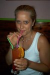
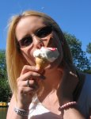
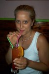
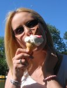

    |
|
|
lornaland.co.uk Holidays Photo Gallery Lornaland Natter USA 2005 Journal Menu...21st May - 23rd May24th May - 26th May 27th May - 29th May 30th May - 1st June 2nd June - 4th June Paros Pictures |
Paros21st May - 23rd May 2004Friday 21st May 2004We set off from home at 1.40am - no sleep for us! We drop Eddie off at his holiday campsite (APH Parking, Gatwick) at 3.00am and jump on the courtesy bus to the terminal. By 3.30am we've checked in and go for a wander round the deserted terminal. Just as things start coming to life and we could finally buy a coffee (or small alcoholic beverage) our flight is called for boarding. Asleep for most of the flight, including the take off (waking briefly to make sure I get my complimentary champagne cocktail, aka bucks fizz and my breakfast), we soon arrive at Mykonos airport. The boat ride to Paros takes 1 1/2 hours so I manage to catch 40 winks. By 5.00pm we finally arrive at "Sunset View Apartments", our home for the next two weeks. There's just time for a stroll into town before we get changed and head off to dinner. Feeling very tired now (having been up for approx 36 hours) we had back to our apartments for an early(ish) night. Dinner: Tzatziki, bread and pizza bread to start followed by lamb Souvlaki for Dan and meatballs for me. Saturday 22nd May 2004After our mammoth session of not sleeping, we decide a nice lazy day is called for. We set up camp on a couple of loungers by the pool to sun-bathe and read (as well as the occasional nap!) At 4.15pm we decide to wander into town for a spot of exploring and a snack. We wander towards the beach and find a nice place for a drink. The "bar-tender"/manager(?) is an American who introduces himself as Jimmy (Osbourne) Yep, apparently he's related to Ozzy (don't ask me how, I didn't even grace him with the pleasure of asking!) After selling us large amounts of food and drink, including a very nice Greek salad, we wander back home for a shower and change before dinner. Tonight we decide to wander to the other end of the sea-front to see what's on offer. We find a nice little restaurant with tables next to the sea and decide to give it a go. Dinner: Starter of tzatziki and bread followed by Pizza for Dan and mousaka for Me (aren't I brave, I didn't even mind the aubergines!) Sunday 23rd May 2004Another day of slobbing spent by the pool. Late in the afternoon we wander into town and look round the Frankish Castle which was made using the stones from an old temple. Time for a drink by the sea before we head back home. Tonight we wandered into the market square to find somewhere to eat. Dan decided to be brave and try something from the traditional Greek dishes although he wasn't entirely sure what it was. It did however turn out to be very nice. After 3 courses and a kilo of wine, we head for home. Dinner: Tzatziki, bread and Greek salad to start followed by beef stifado for Dan and pork souvlaki for me |